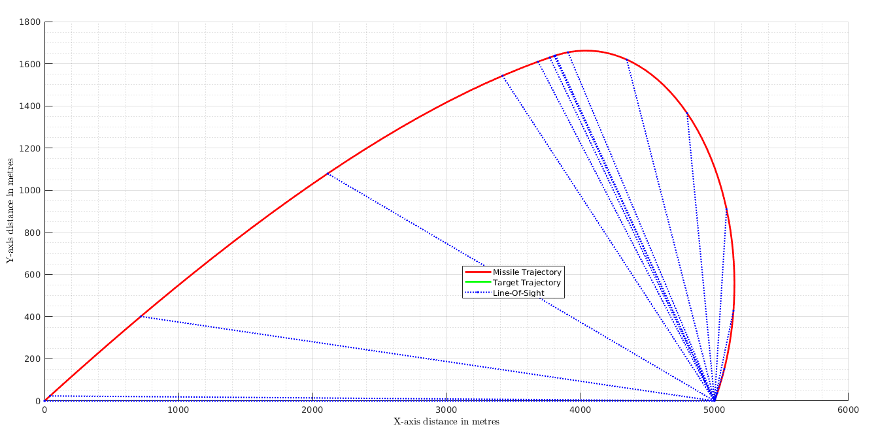

Contents
Equations of Motion
Solve non-linear M-T kinematics
alm0 = deg2rad(30); almf = deg2rad(-120); Vm = 300; % m/s R0 = 5000; Th0 = deg2rad(0); initCond = [R0; Th0; alm0; 0; 0; R0 * cos(Th0); R0 * sin(Th0)]; simTime = [0, 50]; solverOptions = odeset('Event', @p3Terminal, 'AbsTol', 1.0e-8, 'RelTol', 1.0e-6, 'Refine', 5); % Solve equations of motion [tsol, ysol, evT, evS, seq] = ode45(@(t, y) p3state(t, y, Vm, alm0, almf, Th0), simTime, initCond, solverOptions); % Parameter calculations R = ysol(:, 1); Theta = ysol(:, 2); AlphaM = ysol(:, 3); V_r = - Vm .* cos(AlphaM - Theta); V_theta = - Vm .* sin(AlphaM - Theta); ThetaDot = V_theta ./ R; ThetaDeg = rad2deg(Theta);
Vehicle Trajectories with LOS Shots
Missile Target Engagement Simulation
% figure('Name', 'Trajectories', 'Color', 'White'); % xlabel('X-axis distance in metres'); % ylabel('Y-axis distance in metres'); % grid on; grid minor; % axis([0, alrmax(ysol(:, 4)), alrmin(ysol(:, 5)), alrmax(ysol(:, 5))]); % hold on; % % missile = animatedline('Color', 'r', 'LineWidth', 2); % target = animatedline('Color', 'g', 'LineWidth', 2); % LOS = line([ysol(1, 4), ysol(1, 6)], [ysol(1, 5), ysol(1, 7)], 'Color', 'blue', 'LineStyle', '--','Marker', '.', 'MarkerEdgeColor', 'blue', 'MarkerFaceColor', 'none'); % % % for point = 1:length(ysol(:, 4)) % % addpoints(missile, ysol(point, 4), ysol(point, 5)); % addpoints(target, ysol(point, 6), ysol(point, 7)); % % if(point == 1 || mod(point, 10) == 0) % line([ysol(point, 4), ysol(point, 6)], [ysol(point, 5), ysol(point, 7)], 'Color', 'blue', 'LineStyle', '--','Marker', '.', 'MarkerEdgeColor', 'blue', 'MarkerFaceColor', 'none'); % end % % drawnow; % % end % hold off; % % legend([missile, target, LOS], {'Missile Trajectory', 'Target Trajectory', 'Line-Of-Sight'}, 'Location', 'northwest'); base1 = figure('Name', 'Trajectories', 'Color', 'White', 'WindowStyle', 'normal', 'WindowState', 'maximized'); hold on; p1 = plot(ysol(:, 4), ysol(:, 5), 'r', 'LineWidth', 2); % Missile Trajectory: Xm and Ym p2 = plot(ysol(:, 6), ysol(:, 7), 'g', 'LineWidth', 2); % Target Trajectory: Xt and Yt % LOS shots p3 = line([ysol(1, 4), ysol(1, 6)], [ysol(1, 5), ysol(1, 7)], 'Color', 'blue', 'LineStyle', ':', 'Marker', '.', 'MarkerEdgeColor', 'blue', 'MarkerFaceColor', 'none'); for iter = 1:length(ysol(:, 4)) if(mod(iter, 10) == 0) line([ysol(iter, 4), ysol(iter, 6)], [ysol(iter, 5), ysol(iter, 7)], 'Color', 'blue', 'LineStyle', ':','Marker', '.', 'MarkerEdgeColor', 'blue', 'MarkerFaceColor', 'none'); end end hold off; xlabel('X-axis distance in metres'); ylabel('Y-axis distance in metres'); legend([p1, p2, p3], {'Missile Trajectory', 'Target Trajectory', 'Line-Of-Sight'}, 'Location', 'best'); grid on; grid minor;